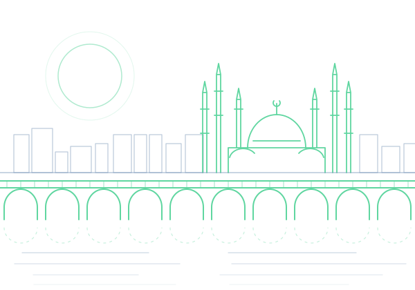

Despacho de abogados · Adana, Turquía
Asesoramiento jurídico y litigios para empresas y particulares
GEK Hukuk es un despacho de abogados con sede en Adana (Turquía) en el que trabajan conjuntamente los abogados Tuğsan Güneş, Ömer Murat Erdil y Adem Karakaya.

- Fundación
- 2014
- Abogados
- 3
- Áreas de práctica
- 11
- Idiomas de trabajo
- TR · EN

Quiénes somos
En Adana desde 2014
El despacho de abogados GEK Hukuk fue fundado en 2014 por el abogado Tuğsan Güneş. El despacho presta asesoramiento y dirección de litigios a personas físicas y jurídicas. Desarrollamos nuestro trabajo en el marco de la Ley de la Abogacía de Turquía y de las Normas Profesionales de la Unión de Colegios de Abogados de Turquía.
El nombre del despacho procede de las iniciales de los apellidos de nuestros abogados: Güneş, Erdil, Karakaya.
Las reuniones y la correspondencia se llevan a cabo en turco o en inglés.
Áreas de práctica
Áreas en las que asesoramos y llevamos litigios
Derecho societario
Los actos jurídicos que acompañan la vida de una sociedad, desde su constitución hasta su liquidación.
Derecho mercantil
Contratos y litigios derivados de las relaciones entre comerciantes y de las operaciones mercantiles.
Asesoría a empresas
Apoyo jurídico continuo en el funcionamiento diario de las empresas.
Cumplimiento normativo (compliance)
Evaluaciones y medidas para que las empresas actúen conforme a la normativa vigente.
Derecho inmobiliario
Operaciones y litigios relativos a la adquisición, el uso y la transmisión de bienes inmuebles.
Derecho laboral
Constitución, desarrollo y extinción de la relación laboral entre empleador y trabajador.
Ejecución y concurso
Cobro de créditos y procedimientos sobre el patrimonio del deudor.
Divorcio y derecho de familia
Procedimientos jurídicos derivados del matrimonio y de las relaciones familiares.
Derecho de sucesiones
Disposiciones por causa de muerte, trámites y litigios relativos al reparto de la herencia.
Propiedad intelectual
Protección de los derechos derivados de marcas, patentes, diseños y derechos de autor.
Representación en mediación y conciliación
Representación de las partes como abogados en procedimientos de mediación y conciliación.
Cómo trabajamos
Cómo avanza un asunto con nosotros
- 01
Primera reunión
Escuchamos su asunto y revisamos juntos los documentos y la información.
- 02
Valoración
Explicamos con claridad la situación jurídica, las vías posibles y sus posibles consecuencias.
- 03
Hoja de ruta
Elaboramos un plan por escrito sobre el procedimiento, los plazos y los trámites necesarios.
- 04
Seguimiento
Le mantenemos informado periódicamente en cada fase del asunto.
Nuestros abogados
Abogados del despacho
Publicaciones
Artículos y notas legislativas
Estamos preparando nuestros primeros artículos. Nuestras notas sobre cambios legislativos y jurisprudencia reciente se publicarán pronto en esta sección. Los artículos se publican en turco.
Contacto
Nuestro despacho
Reşatbey Mah. 62006 Sk. No:5Arun Apt. Kat:5 Daire:14
Seyhan / Adana
Turquía
- Teléfono
- +90 532 292 10 72
- Escríbanos por WhatsApp
- Correo electrónico
- info@gekhukuk.com
- Horario
- De lunes a viernes, 09:00 – 17:00